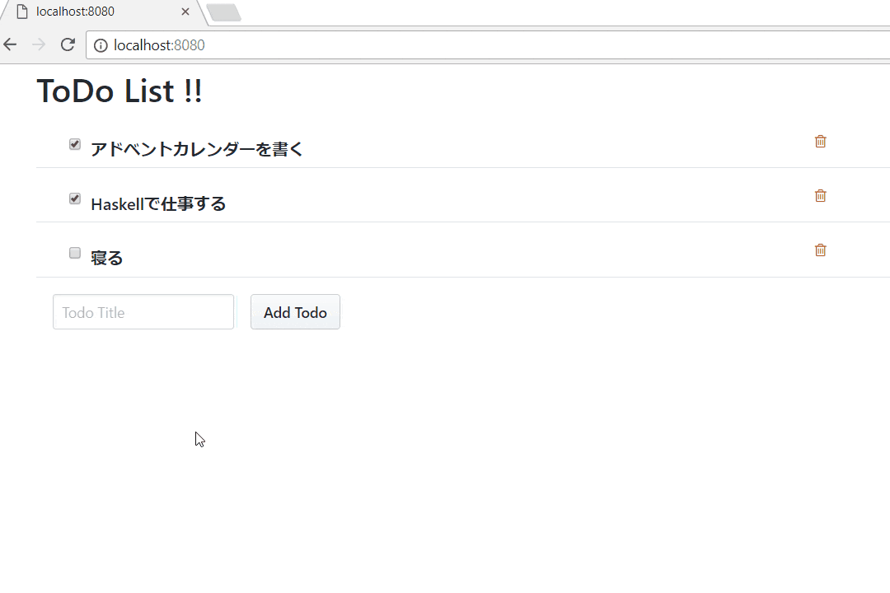

Elm と Haskell で作る ToDo アプリ
Elm Advent Calendar 2017 の13日目の記事です．
普段はよく Haskell を使っていますが，ひょんなことから Elm を触り始め，フロントを表現する良いサブウェポンとしてかなり気に入りました．
今回は Elm の相棒として大本命である(要出典) Haskell と組み合わせた場合の書き方などを ToDo アプリを例にして説明します．
最終的なコードは以下にあります．
ちなみに，この内容については以前に記事にしました．
同じこと書いてもアレなので，今回は Haskell 知らない人向けにブラッシュアップします(できるだけ)．
Haskell の準備
(Haskell は分かってるよ勢は読み飛ばして)
Elm 処理系は既にある前提です． Haskell は特殊な要件(Backpack システムを使いたいとか)が無い限りはstack を使いましょう．
公式サイトにある通り，Windows は専用のインストーラーを，それ以外は curl -sSL https://get.haskellstack.org/ | sh と叩けばいいはず．
プロジェクト
Haskell プロジェクトは .cabal ファイルというのに構成を書く． ただし，.cabal ファイルは独自記法なため慣れてないと扱いにくい． そこで，hpack というのを用いて，よくある yaml ファイルによる構成記述から .cabal に変換して使うのが最近の主流だ．
例えば以下のような package.yaml ファイルを書く．
name: haskell-and-elm
version: 0.1.0.0
homepage: https://github.com/matsubara0507/haskell-and-elm#readme
license: MIT
author: MATSUBARA Nobutada
copyright: 2017 MATSUBARA Nobutada
category: Web
dependencies:
- aeson
- base >= 4.7 && < 5
- elm-export
- servant-elm
library:
source-dirs: src
exposed-modules:
- Hoge
other-modules: []
executables:
hoge-exe:
source-dirs: src
main: Main.hshomepage とか license とか author とかは無くても動く． dependencies は依存パッケージを指定し，library はプロジェクトで作るライブラリの設定を記述し，executables は実行プログラムの設定を記述する． 他にも tests とかもある．
stack の役割
.cabal ファイル(package.yaml) の他に stack.yaml ファイルを用意する必要がある． そもそも stack の役割は，依存しているパッケージ間のバージョンをいい感じに取ってきてくれるパッケージ群のスナップショットを提供することだ．
例えば次のような stack.yaml を書く．
重要なのは resolver で，他は無くてもたぶん動きます． resolver でいい感じのパッケージ群のスナップショットを指定する． どんなのがあるかは公式サイトを参照．
もし，指定したスナップショットにはないパッケージやバージョンを使いたい場合は extra-deps に書くといい．
作るもの
さて本題．
タイトルの通り，フロントを Elm で，バックを Haskell で書いた，超簡易版 ToDo アプリを書きます．
具体的には以下の記事と同じものを書きます．
整理すると以下のようなエンドポイントを Haskell で実装し，Elm 側でアクセスして操作する UI を作る．
GET /todos
POST /todos
PUT /todos/:id
DELETE /todos/:idちなみに，めんどくさいので DB は使わず，Haskell 内部で配列のようにして持つだけにする．
作る
肝になるのは Elm と Haskell をどうやってつなぐか． もちろん RESTful API を定義するので，各々を別々に書くこともできるが，ここはもっと賢くやってみよう．
まずは Haskell から
プロジェクトの準備
stack new でプロジェクトを生成する．
$ stack new haskell-and-elm simple-hpackelm-and-haskell がプロジェクト名で，simple-hpack がテンプレート名だ．
次に package.yaml を書き換える．
name: haskell-and-elm
version: 0.1.0.0
ghc-options: -Wall
dependencies:
- aeson
- base >= 4.7 && < 5
- containers
- elm-export
- http-api-data
- servant
- servant-ede
- servant-elm
- servant-server
- stm
- transformers
library:
source-dirs: src
exposed-modules:
- Todo
other-modules: []少し依存パッケージが多いが気にしない．
src 以下にある Main.hs は要らないので削除して，代わりに Todo.hs を作ろう． まだ以下だけで十分．
取りあえずコンパイルしてみると怒られるはずだ．
# stack build
Error: While constructing the build plan, the following exceptions were encountered:
In the dependencies for haskell-and-elm-0.1.0.0:
servant-ede must match -any, but the stack configuration has no specified version (latest applicable is 0.6)
needed since haskell-and-elm-0.1.0.0 is a build target.
Recommended action: try adding the following to your extra-deps in C:\Users\noob\git\haskell\haskell-and-elm\stack.yaml:
- servant-ede-0.6
You may also want to try the 'stack solver' command
Plan construction failed.package.yaml で servant-ede を依存パッケージに指定してるけど，stack.yaml で指定してるスナップショットには無いから stack.yaml の extra-deps のところに書き加えて，と言われてるので，その通りにする．
これで stack build が通るはず．
型を考える
Haskell はまず，扱う型から考える． Elm もきっと同じですよね(Model の型から考えるよね？？)
今回扱うのは ToDo タスクの型． 話を簡単にするために，識別子と，ToDo タスクのタイトルと，タスクの完了を表す真偽値のみをフィールドに持つとする．
-- src/Todo.hs
module Todo where
data Todo = Todo
{ todoId :: Int
, title :: String
, done :: Bool
}ちなみに，data 宣言による型定義は Elm での type 宣言による定義と同義だ．
次に，RESTful API の仕様を型として定義しよう． そのためには servant と呼ばれるパッケージを用いる． それを用いると次のような API の型を書ける．
-- src/Todo.hs
{-# LANGUAGE DataKinds #-}
{-# LANGUAGE TypeOperators #-}
module Todo where
import Servant.API
import Data.Proxy
data Todo = ...
type CRUD
= "todos" :> Get '[JSON] [Todo]
:<|> "todos" :> ReqBody '[JSON, FormUrlEncoded] Todo :> Post '[JSON] Todo
:<|> "todos" :> Capture "id" Int :> ReqBody '[JSON, FormUrlEncoded] Todo :> Put '[JSON] ()
:<|> "todos" :> Capture "id" Int :> Delete '[JSON] (){-# LANGUAGE ... #-} というのは GHC拡張と呼ばれるもので，Haskell の仕様にはないが，GHC にのみ(便利・面白いから)取り入れられてる機能を使うというフラグみたいなものだ． DataKinds 拡張によって型定義に値レベルのはずの文字列やリストを扱えるようになり("todos" とか '[JSON] の部分)，TypeOperators 拡張で型定義に演算子が使えるようになる．
ちなみに，type 宣言は Elm でいう type alias 宣言と同義で，型の別名を与えているだけだ．
CRUD 型の意味は何となくわかるはずだ． 前述した RESTful API の仕様をそのまんま型にした感じでしょう？
型クラスとジェネリクス
これで一応ビルドは通るが Todo 型の JSON へのデコーダー・エンコーダーと，リクエスト Body にエンコードする関数が未定義のため，後々に怒られるだろう． 怒られないようにするためには Todo 型を FromJSON，ToJSON，FromForm 型クラスのインスタンスにしてやればよい(特定の関数を実装するだけ)． しかし，デコーダーやエンコーダーを手書きするのはめんどくさいよね？
そこで，Haskell のメタプログラミングのひとつ，ジェネリクスを用いる．
src/Todo.hs に以下のようなのを書き加える．
{-# LANGUAGE DeriveGeneric #-}
import Data.Aeson
import GHC.Generics
import Web.Internal.FormUrlEncoded (FromForm)
data Todo = Todo
{ todoId :: Int
, title :: String
, done :: Bool
} deriving (Generic)
instance FromJSON Todo
instance ToJSON Todo
instance FromForm Tododeriving というのは型クラスのインスタンスを自動で設定する仕組みだ． deriving は本来，Show や Eq のような組み込みにある型クラスにのみ使える． ここでは，GHC 固有の Generic と呼ばれる型クラスも deriving したいので，DeriveGeneric 拡張を書き加えている． Generic 型クラスのインスタンスであれば，多くの型クラスのインスタンスを自動で実装してくれる(型クラスを提供してる人がそのような仕組みを作る)．
結果として，instance FromJSON Todo と書くだけで FromJSON のインスタンス化が出来てしまう． すごいよね．
サーバーを立てる
ここはざっくりと(丁寧にやると長くなるので)． 以下のような app/Main.hs ファイルを用意する．
{-# LANGUAGE DataKinds #-}
{-# LANGUAGE TypeOperators #-}
module Main where
import Control.Arrow (second)
import Control.Concurrent.STM
import Control.Monad.IO.Class (liftIO)
import Data.Aeson
import Data.IntMap (IntMap)
import qualified Data.IntMap as IntMap
import Data.Proxy (Proxy (..))
import qualified Network.Wai.Handler.Warp as Warp
import Servant.API
import Servant.EDE (HTML, loadTemplates)
import Servant.Server
import Servant.Utils.StaticFiles (serveDirectoryFileServer)
import Todo (Todo (..))
import qualified Todo
main :: IO ()
main = do
db <- atomically $ newTVar (length initTodoList, IntMap.fromList initTodoList)
_ <- loadTemplates api [] "."
putStrLn "Listening on port 8080"
Warp.run 8080 $ serve api (server db)
type API
= Get '[HTML "index.html"] Object
:<|> "static" :> Raw
:<|> Todo.CRUD
api :: Proxy API
api = Proxy
server :: TVar (Int, IntMap Todo) -> Server API
server db = index
:<|> serveDirectoryFileServer "static"
:<|> getTodos
:<|> postTodo
:<|> putTodoId
:<|> deleteTodoId
where
index = pure mempty
getTodos = liftIO $ IntMap.elems . snd <$> atomically (readTVar db)
postTodo todo = liftIO . atomically $ do
(maxId, m) <- readTVar db
let
newId = maxId + 1
newTodo = todo { todoId = newId }
writeTVar db (newId, IntMap.insert newId newTodo m)
pure newTodo
putTodoId tid todo =
liftIO . atomically . modifyTVar db . second $ IntMap.insert tid todo
deleteTodoId tid =
liftIO . atomically . modifyTVar db . second $ IntMap.delete tid
initTodoList :: [(Int, Todo)]
initTodoList =
[ (1, Todo 1 "アドベントカレンダーを書く" True)
, (2, Todo 2 "Haskellで仕事する" False)
, (3, Todo 3 "寝る" False)
]キモなのは server 関数のところ． getTodos や deleteTodoId などの補助関数が，src/Todo.hs で定義した CRUD 型に対応しているのが分かるだろう．
API 型は CRUD 型に index.html 用のパスと静的ファイル用のパス static を追加しただけだ． ちなみに，TVar 型とか atomically 関数とかは，並列処理の Software Transactional Memory という機能のためのモノです．
stack build したのち，stack exec server とすると API サーバーを起動できる．
$ stack exec server
Listening on port 8080実際に curl でアクセスしてみる．
$ curl http://localhost:8080/todos
[{"done":true,"todoId":1,"title":"アドベントカレンダーを書く"},{"done":false,"todoId":2,"title":"Haskellで仕事する"},{"done":false,"todoId":3,"title":"寝る"}]Elm にバトンタッチ
Haskell の話ばっかりですいません… ここからはお待ちかねの Elm です．
の前に準備
Elm で HTTP リクエストを送るには Http.request を使うのが一般的だと思う． それで http://localhost:8080/todos を叩けば一応 ToDo タスクのリストは手に入る． しかし，せっかく自分で API を定義したなら，そのクライアントも自動で生成したいじゃない．
そこで使うのが servant-elm パッケージ！ (あれ，また Haskell の話に戻ってる？)
servant-elm と elm-export というパッケージを使うと
- Haskell の型から Elm の型の生成
- 生成した Elm の型のための JSON デコーダー・エンコーダーの生成
- Servant の API 型から Elm のためのクライアントを生成
してくれる． すごいね！
(ただし，全ての Haskell の型を Elm の型に変換できるわけではない…)
まずは Elm の型に変換できるように，src/Todo.hs に以下の行を書き加える．
そして，app/Generate.hs というファイルを作る．
{-# LANGUAGE OverloadedStrings #-}
module Main where
import Data.Proxy
import Elm
import Servant.Elm
import Shelly (mkdir_p, shelly)
import Todo (CRUD, Todo)
elmOpts :: ElmOptions
elmOpts =
defElmOptions
{ urlPrefix = Static "http://localhost:8080" }
spec :: Spec
spec = Spec ["Generated", "TodoAPI"]
(defElmImports
: toElmTypeSource (Proxy :: Proxy Todo)
: toElmDecoderSource (Proxy :: Proxy Todo)
: toElmEncoderSource (Proxy :: Proxy Todo)
: generateElmForAPIWith elmOpts (Proxy :: Proxy CRUD))
main :: IO ()
main = do
shelly $ mkdir_p "elm-src/Generated"
specsToDir [spec] "elm-src"Shelly というのは Hasksell 上で UNIX コマンドみたいのを叩くためのパッケージ．
spec 関数の Spec ["Generated", "TodoAPI"] で Generated.TodoAPI というモジュールを生成することを指定している． main 関数の specsToDir [spec] "elm-src" で Generated.TodoAPI モジュールを elm-src ディレクトリ以下に生成する． 結果として elm-src/Generated/TodoAPI.elm ファイルが生成される．
これを package.yaml にテストとして設定することで，stack test で生成してくれるようになる．
# package.yaml
tests:
generate:
source-dirs: app
main: Generate.hs
dependencies:
- haskell-and-elm
- shelly
other-modules: []$ stack test
haskell-and-elm-0.1.0.0: test (suite: generate)
Writing: elm-src/Generated/TodoAPI.elm生成されたファイルはコチラ(長いので載せない)．
Elm の準備
さていよいよ Elm を手書きしよう． elm-src/Generated/TodoAPI.elm というファイルを生成していたので，elm-src/Main.elm というパスで Main ファイルを書く． 以下のような elm-package.json を用意する．
{
"version": "0.1.0",
"summary": "Sample for haskell and elm",
"repository": "https://github.com/yourname/haskell-and-elm.git",
"license": "MIT",
"source-directories": [
"elm-src"
],
"exposed-modules": [],
"dependencies": {
"elm-lang/core": "5.1.1 <= v < 6.0.0",
"elm-lang/html": "2.0.0 <= v < 3.0.0",
"elm-lang/http": "1.0.0 <= v < 2.0.0",
"elm-lang/navigation": "2.0.0 <= v < 3.0.0",
"elm-community/json-extra": "2.0.0 <= v < 3.0.0",
"elm-community/list-extra": "6.0.0 <= v < 7.0.0",
"Bogdanp/elm-route": "4.0.0 <= v < 5.0.0",
"krisajenkins/remotedata": "4.3.0 <= v < 5.0.0",
"NoRedInk/elm-decode-pipeline": "3.0.0 <= v < 4.0.0"
},
"elm-version": "0.18.0 <= v < 0.19.0"
}モデルとメッセージの型
まずはモデル(フロントが持つべき状態)から．
あまり Elm の流儀を知らないが，HTTPリクエストのように外部から取得するデータは，remotedata パッケージの RemoteData 型のようなデータ構造を使う(？)
module Main exposing (..)
import Generated.TodoAPI as API exposing (Todo)
import RemoteData exposing (RemoteData(..))
type alias Model =
{ todos : RemoteData String (List API.Todo)
, title : String
}title フィールドは ToDo タスクを追加するときに使うテキストボックスの値だ．
次に Msg を考える． Msg はフロントで起こり得る状態変化のパターンを考えればよい(んだよね？)．
今回は以下の4つがしたかった．
- ToDo タスクを全て取得
- ToDo タスクの追加(テキストボックス)
- ToDo タスクを完了する(チェックボックス)
- ToDo タスクの削除(ボタンを押す)
(2)は更に細分化されて，「テキストボックスの入力」と「追加ボタンを押す」がある． また，追加や削除をした後に，(あんまり賢くないが)画面をリロードして再度 ToDo タスクを取得してくるべきだろう．
以上から以下のような Msg を定義すればよい(全部で6種類のパターンがある)．
type Msg
= FetchTodos (Result Http.Error (List API.Todo))
| Reload
| ChangeTodo Todo
| Title String
| Push Button
type Button
= Post String
| Delete Intトップダウンに書いていく
型はできたので，あとはトップダウンに作っていこう．
main : Program Never Model Msg
main =
Html.program
{ init = init model
, view = view
, update = update
, subscriptions = \_ -> Sub.none
}
model : Model
model = undefined ()
init : Model -> ( Model, Cmd Msg )
init model = undefined ()
view : Model -> Html Msg
view model = undefined ()
update : Msg -> Model -> ( Model, Cmd Msg )
update msg model = undefined ()
undefined : () -> a
undefined _ = Debug.crash "undefined..."まずは main 関数だけ書いた． Haskell でいう undefined という値が Elm では見つからなかったので自分で undefined という関数を定義した(Elm は正格評価なので関数にして遅延させないといけない)． (undefind が標準にない事から)Elm ではあまりなじみが無いのかもしれないが，Haskell (というか関数型プログラミング)ではまずは型だけ書いてトップから順に実装を書き加えていくのがセオリー(だよね？)．
まずはこれでビルドしてみる．
$ elm make elm-src/Main.elm --output=static/main.js
Success! Compiled 1 module.
Successfully generated static/main.jsindex.html を書いてなかったので適当に書いておく．
<head>
<link rel="stylesheet" type="text/css" href="https://cdnjs.cloudflare.com/ajax/libs/Primer/10.0.0-rc.21/build.css" media="all">
<link rel="stylesheet" type="text/css" href="https://cdnjs.cloudflare.com/ajax/libs/font-awesome/4.7.0/css/font-awesome.min.css" media="all">
</head>
<div id="main"></div>
<script src="static/main.js"></script>
<script>
var node = document.getElementById('main');
var app = Elm.Main.embed(node);
</script>もう一度サーバーを立てて localhost:8080 にアクセスしてみる． もちろん，真っ白で Uncaught Error: Ran into a Debug.crash in module Main on line 68 というエラーメッセージが出るだけなんだが(笑)
model 式はただの初期値で，init 関数はただの初期化関数だ．
model : Model
model =
{ todos = NotAsked, title = "" }
init : Model -> ( Model, Cmd Msg )
init model =
( model, fetchTodos )
fetchTodos : Cmd Msg
fetchTodos =
Http.send FetchTodos API.getTodosまず最初に ToDo タスクを全て取得してくる必要があるので，http://localhost:8080/todos を叩く HTTP リクエストを呼んでいる．
view 関数は泥臭くなるので割愛(コードを見てね)．
update 関数は次のようになる
update : Msg -> Model -> ( Model, Cmd Msg )
update msg model =
case msg of
FetchTodos (Ok todos) ->
( { model | todos = Success todos }, Cmd.none )
FetchTodos (Err _) ->
( { model | todos = Failure "Something went wrong.." }, Cmd.none )
ChangeTodo todo ->
( model, changeTodo todo )
Title title ->
( { model | title = title }, Cmd.none )
Push (Post title) ->
( model, addTodo <| Todo 0 title False )
Push (Delete todoId) ->
( model, removeTodo todoId )
Reload ->
( model, fetchTodos )
changeTodo : Todo -> Cmd Msg
changeTodo todo =
Http.send (always Reload) (API.putTodosById todo.todoId todo)
addTodo : Todo -> Cmd Msg
addTodo todo =
Http.send (always Reload) (API.postTodos todo)
removeTodo : Int -> Cmd Msg
removeTodo todoId =
Http.send (always Reload) (API.deleteTodosById todoId)各種 HTTP レスポンスのラッパー関数を用意して，対応する Msg で読んでいるだけだ． ただし，GET 以外の HTTP レスポンスが完了したときに，再度 ToDo タスクを読み込むよう always Reload という Msg 生成関数を渡している． ちなみに，Todo 型の todoId はサーバーサイドで勝手に書き換えるので，POST するときは 0 で良い．
これで完成
実行

おまけ
いちいち，Elm をビルドしたり，Haskell ビルドしたり，サーバー起動したりめんどくさいよね． そこで app/Generate.hs の main 関数に以下を記述して
main :: IO ()
main = do
shelly $ mkdir_p "elm-src/Generated"
specsToDir [spec] "elm-src"
-- ココから
shelly $
run_ "elm-make" ["elm-src/Main.elm", "--output=static/main.js"]stack test --file-watch と stack exec server を起動しておくと，勝手にどんどん更新される．
おしまい
長くなってしまった． しかもほとんど Haskell のハナシ… Elm のカレンダーなのに…すいません…